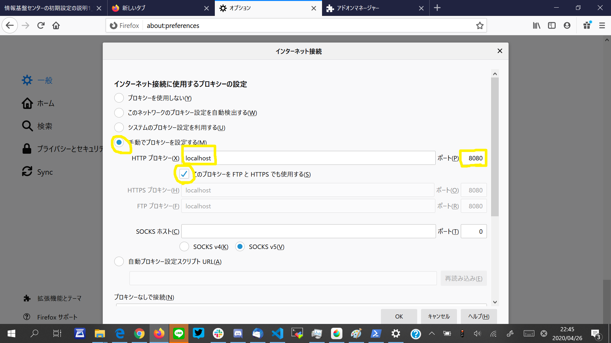

Lunatic電通生もっちゃんの部屋
STEP 2 Web ブラウザに学内専用サイトを閲覧する設定をする（後編）
次に、Step 1でインストールした「Firefox」を立ち上げます。
「右上の三 ⇒ オプション ⇒ 一般」を選択し、一番下にある「接続設定」をクリックします。
上の画像の黄色の印を手がかりに入力をお願いします。
- 「手動でプロキシを設定する」にチェック
- HTTPプロキシ欄に「localhost」と入力
- ポート欄に「8080」と入力
- その下の「このプロキシーを FTP と HTTPS でも使用する(S)」にチェック

上の方の「＋｝を押して「新しいタブ」を出してください。そして、以下のURLを入力してください。
https://www.cc.uec.ac.jp/in/

上のような画面が出たら成功です。
Next -> STEP 3 UEC アカウントの初期パスワードを変更する